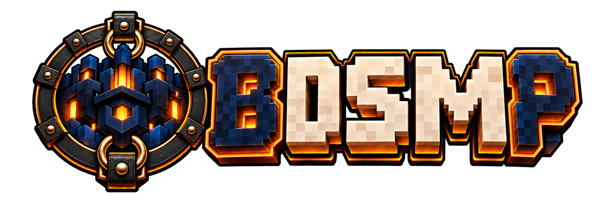

BDSMP · FABRIC 1.21.11
The mod list.
Browse the collection that BDSMP synchronizes before launch. The list is read directly from the launcher’s public mod repository.
Loading mods…
Loading the current mod list…

Browse the collection that BDSMP synchronizes before launch. The list is read directly from the launcher’s public mod repository.